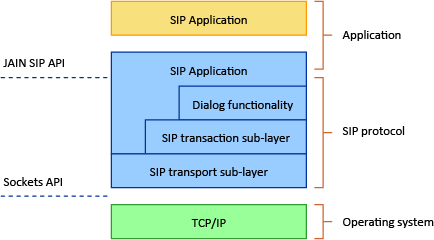
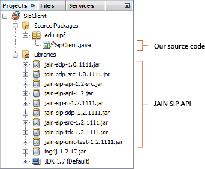
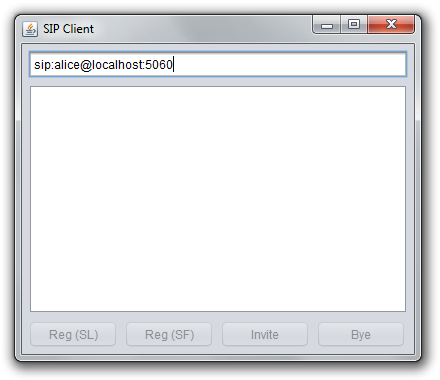

Alex Bikfalvi
- Home
- Teaching
- Pompeu Fabra University
- 2013
- Architecture and Signaling
- Lab
- Developing a SIP Application in Java
Developing a SIP Application in Java
Lab Overview
Goals
The objective of this practical exercise is to create a simple SIP client application using the Java programming language. For this purpose, we shall use the JAIN-SIP application-programming interface (API), which already implements an extensive set of SIP functions.
What is the JAIN-SIP API?
In the same way as the socket API, in modern operating systems, implements the functionality of TCP/IP stack protocols, the JAIN-SIP API, illustrated in the figure 1, provides to developers a set of interfaces to:

Figure 1. The JAIN SIP API.
- Build and parse SIP messages.
- Sending and receiving SIP messages statelessly, at the transport sub-layer.
- Sending and receiving SIP messages statefully, at the transaction sub-layer.
Software Tools
To create our SIP client application, we shall use:
- The Java Software Development Kit Standard Edition (Java SDK SE).
- The NetBeans integrated development environment (IDE).
- The JAIN SIP API.
Lab Assignment
This lab assignment consists of four (4) tasks.
- Send a SIP request and receive a SIP response in stateless mode.
- Send a SIP request and receive a SIP response in statefull or transaction mode.
- Create a SIP dialog.
- Terminate a SIP dialog.
The first two (2) we shall do together. The last two (2) are individual and/or homework. You need to hand in your code in a single archive file (ZIP, GZ, TAR, etc.) and the answer to the lab questions before the 15th of February, 2013. The answers to questions is 60% of the final mark, uploaded code is 40% of the final mark. Fully functional code gives a bonus of 20%.
Lab Steps
Step 1: Download Prerequisites
Open your browser and download a prerequisites file from the following URL:
http://alex.bikfalvi.com/teaching/upf/2013/architecture_and_signaling/lab/sip/sip-client.zip
Unpack the contents of the downloaded file in an empty folder (directory).
Step 2: Open Project NetBeans
- Open the NetBeans Integrated Development Environment.
- From the File > Open Project... menu open the
SipClientJava project found in the previous folder. - Once the project has loaded, in the left side project tree find and open the
SipClient.javafile, as shown in the figure 2. - Our Java application uses a graphical user interface (GUI). At the top of the main code area there are two buttons named Source and Design with which you can change between writing Java source code and designing your user interface. Because the user interface has already been designed for you, we shall continue in source code mode.
- Build your project from the Run > Build Project menu (or with the F11 key). Check the project compiles and builds without errors.
- Run your application from the Run > Run Project menu (or with the F6 key). You should see a new window named SipClient as shown in the figure 3.

Figure 2. The project tree in NetBeans.

Figure 3. The GUI window of the SIP application.
Step 3: Viewing and Understanding the GUI Controls
The window of our SIP client application is divided into three regions:
- A text field control named
textBox, where we shall enter the SIP URI. - A text area control names
textArea, where we can display text information. - A row of four (4) buttons corresponding to the SIP functions we shall implement.
- A Reg (SL) button named
buttonRegistrationStateless, that implements a SIP registration using a stateless SIP user agent. - A Reg (SF) button named
buttonRegistrationStatefull, that implements a SIP registration using a statefull SIP user agent. - A Invite button named
buttonRegistrationInvite, that establishes a SIP dialog (or INVITE transaction). - A Bye button named
buttonRegistrationBye, that terminates a SIP dialog (or BYE transaction).
- A Reg (SL) button named
Initially all buttons are disabled, and we shall enable them programmatically, as needed.
Step 4: Viewing and Understanding the Source Code
After closing the running application, return to the NetBeans IDE, and switch into source code mode. The SIP client application is a single Java class called SipClient. It extends the JFrame class and therefore is a GUI window, and implements the SipListener interface to receive and process SIP messages.
public class SipClient extends JFrame implements SipListener { // ... // The class code is here. // ... }
The class includes a number of methods corresponding to the events raised by (i) the GUI and (ii) the SIP JAIN API. The following code sample shows the methods corresponding to GUI events.
private void onOpen(WindowEvent evt) { // A method called when you open your application. } private void onRegisterStateless(ActionEvent evt) { // A method called when you click on the "Reg (SL)" button. } private void onRegisterStatefull(ActionEvent evt) { // A method called when you click on the "Reg (SF)" button. } private void onInvite(ActionEvent evt) { // A method called when you click on the "Invite" button. } private void onBye(ActionEvent evt) { // A method called when you click on the "Bye" button. }
The meaning of each method is given in the following table.
| Method Name | Description |
|---|---|
onOpen |
The method is called when the application is opened. |
onRegisterStateless |
The method is called when you click the Reg (SL) button. |
onRegisterStatefull |
The method is called when you click the Reg (SF) button. |
onInvite |
The method is called when you click the Invite button. |
onBye |
The method is called when you click the Bye button. |
The following code sample shows the methods corresponding to the SIP events.
public void processRequest(RequestEvent requestEvent) { // A method called when you receive a SIP request. } public void processResponse(ResponseEvent responseEvent) { // A method called when you receive a SIP request. } public void processTimeout(TimeoutEvent timeoutEvent) { // A method called when a SIP operation times out. } public void processIOException(IOExceptionEvent exceptionEvent) { // A method called when a SIP operation results in an I/O error. } public void processTransactionTerminated(TransactionTerminatedEvent transactionTerminatedEvent) { // A method called when a SIP transaction terminates. } public void processDialogTerminated(DialogTerminatedEvent dialogTerminatedEvent) { // A method called when a SIP dialog terminates. }
During this lab, we shall focus only on the first two methods, described in the following table.
| Method Name | Description |
|---|---|
processRequest |
The method is called when the application receives a SIP request message. |
processResponse |
The method is called when the application receives a SIP response message. |
Packages and Classes
During the development of our application we shall use several Java packages and classes.
| Package Name | Description |
|---|---|
java.net.* |
Package containing networking classes. |
java.util.* |
Package containing other utility classes. |
javax.sip.* |
Package containing the main interfaces that model the architecture from both an application developer and a stack vendor view. |
javax.sip.address.* |
Package containing the interfaces that represent the addressing components of the SIP protocol. |
javax.sip.header.* |
Package containing all the headers interfaces supported by the SIP specification. |
javax.sip.message.* |
Package containing interfaces representing SIP messages. |
| Class Name | Description |
|---|---|
SipFactory |
A class which applications can use to obtain SIP API object implementations. |
SipListener |
An interface representing the application view to a SIP stack, and therefore defines the application's communication channel to the SIP stack. |
SipProvider |
An interface representing the messaging entity of a SIP stack. In defines the messaging and transactional component view of the SIP stack. |
SipStack |
An interface representing the management interface of a SIP stack. |
MessageFactory |
This interface provides factory methods that allow an application to create Request and Response messages from a particular implementation of JAIN SIP. |
HeaderFactory |
This interface provides factory methods that allow an application to create Header object from a particular implementation of JAIN SIP. |
AddressFactory |
This interface provides factory methods that allow an application to create Address objects and SIP URIs. |
ListeningPoint |
This interface represents a unique IP network listening point, which consists of port transport and IP. A ListeningPoint is a Java representation of the socket that a SipProvider messaging entity uses to send and receive messages. |
Request |
A SIP Request is a request from a client to a server. |
Response |
A Response message is sent by a recipient of Request once it has received and interpreted the Request. |
Lab Tasks
Stateless Registration
This task we shall perform together during the lab. You should write down the answers to the questions in italics. Submit these answers in your lab report.
- Open the
SipClientNetBeans project in source code view. - Add the following packages to the source code file, before the beginning of the
SipClientclass.import java.net.*; import java.util.*; import javax.sip.address.*; import javax.sip.header.*; import javax.sip.message.*;
- The first step is to declare a number of class member variables that represent the configuration settings of our SIP client, and the objects of the SIP API. Add the following variables inside the
SipClientclass.// Objects used to communicate to the JAIN SIP API. SipFactory sipFactory; // Used to access the SIP API. SipStack sipStack; // The SIP stack. SipProvider sipProvider; // Used to send SIP messages. MessageFactory messageFactory; // Used to create SIP message factory. HeaderFactory headerFactory; // Used to create SIP headers. AddressFactory addressFactory; // Used to create SIP URIs. ListeningPoint listeningPoint; // SIP listening IP address/port. Properties properties; // Other properties. // Objects keeping local configuration. String ip; // The local IP address. int port = 6060; // The local port. String protocol = "udp"; // The local protocol (UDP). int tag = (new Random()).nextInt(); // The local tag. Address contactAddress; // The contact address. ContactHeader contactHeader; // The contact header.
- We need to initialize the SIP API such that we bind our application to the local IP address and the selected port and protocol. For this add the following code to the
onOpenmethod. You may skip the comments in green. Therefore, the initialization code will be executed every time we open our application.try { // Get the local IP address. this.ip = InetAddress.getLocalHost().getHostAddress(); // Create the SIP factory and set the path name. this.sipFactory = SipFactory.getInstance(); this.sipFactory.setPathName("gov.nist"); // Create and set the SIP stack properties. this.properties = new Properties(); this.properties.setProperty("javax.sip.STACK_NAME", "stack"); // Create the SIP stack. this.sipStack = this.sipFactory.createSipStack(this.properties); // Create the SIP message factory. this.messageFactory = this.sipFactory.createMessageFactory(); // Create the SIP header factory. this.headerFactory = this.sipFactory.createHeaderFactory(); // Create the SIP address factory. this.addressFactory = this.sipFactory.createAddressFactory(); // Create the SIP listening point and bind it to the local IP address, port and protocol. this.listeningPoint = this.sipStack.createListeningPoint(this.ip, this.port, this.protocol); // Create the SIP provider. this.sipProvider = this.sipStack.createSipProvider(this.listeningPoint); // Add our application as a SIP listener. this.sipProvider.addSipListener(this); // Create the contact address used for all SIP messages. this.contactAddress = this.addressFactory.createAddress("sip:" + this.ip + ":" + this.port); // Create the contact header used for all SIP messages. this.contactHeader = this.headerFactory.createContactHeader(contactAddress); // Display the local IP address and port in the text area. this.textArea.append("Local address: " + this.ip + ":" + this.port + "\n"); } catch(Exception e) { // If an error occurs, display an error message box and exit. JOptionPane.showMessageDialog(this, e.getMessage(), "Error", JOptionPane.ERROR_MESSAGE); System.exit(-1); }
- Next, we implement the stateless registration. For this we must create and send a REGISTER request message. The destination of the SIP message is entered by the user in the text field
textField. The message is created and sent when you click on the Reg (LS) button, and therefore, we implemented in theonRegisterStatelessmethod. Add the following code to the method. You may skip the comments in green.try { // Get the destination address from the text field. Address addressTo = this.addressFactory.createAddress(this.textField.getText()); // Create the request URI for the SIP message. javax.sip.address.URI requestURI = addressTo.getURI(); // Create the SIP message headers. // The "Via" headers. ArrayList viaHeaders = new ArrayList(); ViaHeader viaHeader = this.headerFactory.createViaHeader(this.ip, this.port, "udp", null); viaHeaders.add(viaHeader); // The "Max-Forwards" header. MaxForwardsHeader maxForwardsHeader = this.headerFactory.createMaxForwardsHeader(70); // The "Call-Id" header. CallIdHeader callIdHeader = this.sipProvider.getNewCallId(); // The "CSeq" header. CSeqHeader cSeqHeader = this.headerFactory.createCSeqHeader(1L,"REGISTER"); // The "From" header. FromHeader fromHeader = this.headerFactory.createFromHeader(this.contactAddress, String.valueOf(this.tag)); // The "To" header. ToHeader toHeader = this.headerFactory.createToHeader(addressTo, null); // Create the REGISTER request. Request request = this.messageFactory.createRequest( requestURI, "REGISTER", callIdHeader, cSeqHeader, fromHeader, toHeader, viaHeaders, maxForwardsHeader); // Add the "Contact" header to the request. request.addHeader(contactHeader); // Send the request statelessly through the SIP provider. this.sipProvider.sendRequest(request); // Display the message in the text area. this.textArea.append( "Request sent:\n" + request.toString() + "\n\n"); } catch(Exception e) { // If an error occurred, display the error. this.textArea.append("Request sent failed: " + e.getMessage() + "\n"); }
- Test your application. You need to enter a valid SIP URI. For this in the user text field, change
localhostwith your IP address displayed in the client. - Although your application sends a SIP message, you do not know whether you receive a response. For this we must write code that listens to received responses. We add this code to the
processResponsemethod.// Get the response. Response response = responseEvent.getResponse(); // Display the response message in the text area. this.textArea.append("\nReceived response: " + response.toString());
- To test whether you receive a response, wait for the instructor's assistance. You may use a Java SIP server available at: http://alex.bikfalvi.com/teaching/upf/2013/architecture_and_signaling/lab/sip/sip-server.zip You need to open and compile the server in NetBeans similar to the SIP client.
| Questions |
|---|
| Which is the line of code that enables our client application to receive the SIP messages from the SIP API (requests and responses)? |
| What happens if we start twice the client application with the same configuration? |
| What are the fields in the sent SIP message? Which is the request URI? |
| Which headers are the same in the response received from the SIP server? |
Statefull Registration
Sending messages statefully is very easy because most of the work is already done for us by the JAIN SIP API. The only thing we have to do is to use a statefull SIP transaction, instead of the stateless SipProvider.
- Copy and paste the code you write in the
onRegisterStatelessmethod to theonRegisterStatefullmethod. Therefore, this code is executed when you click on the Reg (LS) button. - Comment the line where you send the message using the SIP provider, and instead create a SIP
ClientTransactionobject for the REGISTER request. Send the message using the transaction.// Send the request statelessly through the SIP provider. // this.sipProvider.sendRequest(request); // Create a new SIP client transaction. ClientTransaction transaction = this.sipProvider.getNewClientTransaction(request); // Send the request statefully, through the client transaction. transaction.sendRequest();
- Test your application.
| Questions |
|---|
| Which headers are different between the request and the response SIP messages? |
| Which are the headers that have the same value? |
| When receiving a SIP response, how do we know if the message is statefull or stateless? |
Create a SIP Dialog
This is an individual assignment. However, here's a couple of tips below.
Tips:- A SIP dialog is established by an INVITE transaction. In an INVITE transaction, the SIP client sends an INVITE request message, waits for zero or more 1xx provisional responses, and a final 2xx response. After the final response, it sends an ACK request.
- A SIP dialog is always statefull, and you must use a transaction.
- To keep the lab simple, the SIP server will send only a final response (no provisional responses).
- When receiving the final 2xx response, you must send the ACK on the newly created dialog, which can be obtained with the code:
Dialog dialog = responseEvent.getClientTransaction().getDialog(); - You must check whether the dialog exists (different from
null). - You can create the ACK request using the dialog. Do not forget to add the contact header to the request, after the request is created.
Request request = dialog.createAck(((CSeqHeader)response.getHeader("CSeq")).getSeqNumber());
- You must send the ACK request using the dialog.
dialog.sendAck(request);
- Do not forget to use a
try--catchstatement around the instructions above. - Store the dialog object in a class member variable, such that you can use it for the BYE transaction.
| Questions |
|---|
| Which are the header values in a SIP message that uniquely identify a SIP dialog? |
| When is SIP dialog considered to be created? (Use your lecture notes). |
| What happens if your client application fails to send an ACK request after receiving the final 2xx response? |
Terminate a SIP Dialog
This is an individual assignment. However, here's a couple of tips below.
Tips:- Terminating a SIP dialog consists of a BYE transaction.
- To execute a BYE transaction, first you must create a SIP dialog using an INVITE transaction. You need to store the created dialog in a class variable.
- You can create the BYE request using the dialog established during the INVITE transaction. This ensures that all headers already have the correct values. You do not need to add any headers to the message. The code to do this is the following:
Request request = this.dialogClient.createRequest("BYE");
- You need to send the BYE statefully using a transaction (like the previous statefull requests).
ClientTransaction transaction = this.sipProvider.getNewClientTransaction(request);
- However, instead of sending the request using the transaction, you send it using the SIP dialog.
this.dialogClient.sendRequest(transaction);
| Questions |
|---|
| Compare the headers between the INVITE, ACK and BYE requests of the same dialog. Which headers are the same? |
| Which headers are different? |
When does the number from the CSeq header change? Why? |
Published: Febrary 20, 2013
Last updated: February 21, 2013